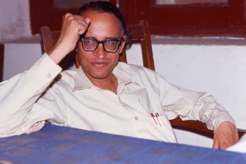
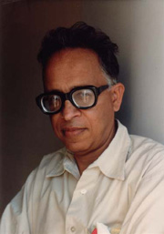

MUHAMMAD SALIM-UR-RAHMAN — poet, critic, columnist, short-story writer, translator, and editor of one of the oldest, still running literary journals, Savera — lives a hermetic life in Lahore devoted to the pursuit of literature. |
|  |  |
PHOTO
BY M.U. MEMON, 1974 |
PHOTO
BY M.U. MEMON,
1983 |